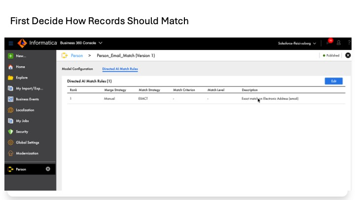
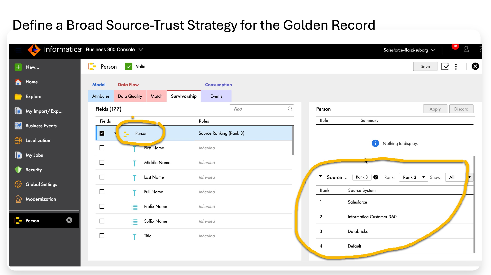
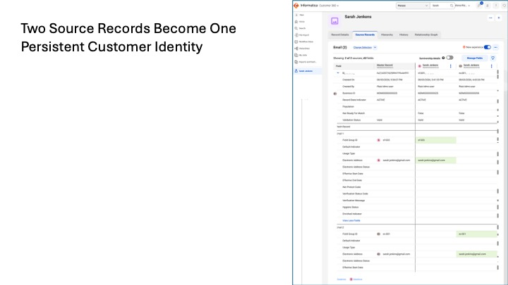

Lab 5
The source data has already been cleaned and standardized. We now have customer records from Salesforce and Databricks that are ready to be compared.
The problem is that the two systems still do not know when their records refer to the same real person. This is the problem Master Data Management (MDM) solves.
Use Informatica Customer 360 SaaS to identify records that belong to the same customer, merge the records we confirm as the same person, and create one trusted golden record while preserving the link back to every contributing source record.
Salesforce record Databricks record
\ /
\ /
+--- MATCH ---+
|
v
MERGE decision
|
v
SURVIVORSHIP
which source value wins?
|
v
GOLDEN RECORD
In short: clean records from different systems go in; MDM determines which belong to the same customer and produces one trusted master record.
| Concept | Question it answers | What we do in this lab |
|---|---|---|
| Match | Do these two records describe the same person? | Compare Salesforce and Databricks records using exact email. |
| Merge | What should happen when a pair matches? | Use Manual merge so a person confirms the match before consolidation. |
| Survivorship | If the sources disagree, which value wins? | Rank Salesforce above Databricks for identity fields. |
Match answers: SAME PERSON? Merge answers: COMBINE THEM? Survivorship answers: WHICH VALUE WINS?
| Application | What it is used for here |
|---|---|
| Business 360 Console | Configure the MDM engine: Person model, searchable email, match model, source systems, and survivorship. |
| Customer 360 | Work with the records: import files, inspect match results, search customers, merge records, and inspect the golden record. |
Navigation note: These are separate applications inside Informatica Data Management Cloud (IDMC). Use the app switcher at the top-left when a step tells you to move between them.
| Part | Purpose | Where |
|---|---|---|
| A | Prepare two small CSV files containing the clean Salesforce and Databricks records. | Databricks |
| B | Configure the Person entity as Customer B2C so its MDM configuration tabs are available. | Business 360 Console |
| C | Make the email value searchable so matching can use it. | Business 360 Console |
| D | Create a custom match model that compares exact email. | Business 360 Console |
| E | Publish the match model and regenerate match keys. | Business 360 Console |
| F | Create Salesforce and Databricks as named source systems. | Business 360 Console |
| G | Set survivorship so Salesforce wins identity conflicts. | Business 360 Console |
| H | Import the Salesforce records as the first source. | Customer 360 |
| I | Match and import the Databricks records against Salesforce. | Customer 360 |
| J | Manually merge the confirmed Sarah pair. | Customer 360 |
| K | Inspect the golden record, its source records, and its history. | Customer 360 |
• The clean staging tables exist in Databricks: staging_sf_customer, dq_exception_sf, staging_dbx_customer, and dq_exception_dbx.
• You can open Business 360 Console and Customer 360.
• Your user has the Business 360 Console Designer role needed to create source-system assets and publish match models.
Job timing: Customer 360 import, indexing, and match jobs can take several minutes even for very small files. Monitor My Jobs and wait for Status = Success before assuming a step has failed.
A later Lab 8 exercise recreated the Salesforce output tables. If you are demonstrating the exact Salesforce rows that originally fed MDM, use cv1_workshop_catalog.cv1_workshop.staging_sf_customer_bkp_20260807 and cv1_workshop_catalog.cv1_workshop.dq_exception_sf_bkp_20260807. The Databricks staging_dbx_customer and dq_exception_dbx tables remain unchanged.
Customer 360's File Import workflow reads CSV files. For the workshop, we export the already-cleaned records from Databricks so you can see exactly what enters MDM. In production, this manual export would normally be replaced by an automated ingestion pattern.
In the Databricks SQL Editor, run:
SELECT Source_Record_ID__c AS source_pk, split_part(Full_Name__c,' ',1) AS first_name, split_part(Full_Name__c,' ',2) AS last_name, Full_Name__c AS full_name, Email__c AS email FROM cv1_workshop_catalog.cv1_workshop.staging_sf_customer;
Download the result as CSV and save it as cv1_sf_for_mdm.csv.
Expected result: 2 rows — sf-003 Sarah Jenkens and sf-004 Diego Martinez.
The web-event rows do not contain first and last name fields. For the workshop, we add the known names so the records satisfy Person's required-name fields and can be compared cleanly.
SELECT event_id AS source_pk, CASE web_user_id WHEN 'WEB-1' THEN 'Sarah' WHEN 'WEB-2' THEN 'Diego' END AS first_name, CASE web_user_id WHEN 'WEB-1' THEN 'Jenkens' WHEN 'WEB-2' THEN 'Martinez' END AS last_name, CASE web_user_id WHEN 'WEB-1' THEN 'Sarah Jenkens' WHEN 'WEB-2' THEN 'Diego Martinez' END AS full_name, web_email AS email FROM cv1_workshop_catalog.cv1_workshop.staging_dbx_customer;
Download the result and save it as cv1_dbx_for_mdm.csv.
Expected result: 3 rows — ev-001, ev-002, and ev-004. event_id is used as the unique source primary key.
The Person entity uses field groups such as Address, Phone, and Email. Mapping into a field group activates that group's required child fields. The workshop data does not contain all required address or phone fields, so we do not map those groups.
We use: source primary key + first name + last name + full name + email We deliberately do NOT map: address or phone groups
Part A result: You have one clean Salesforce file and one clean Databricks file ready for Customer 360.
Person is the prebuilt Customer 360 business entity for people. Before its Match and Survivorship configuration can be used, the entity must be associated with the correct subscribed record type. For this workshop, we are mastering natural persons, so the correct type is Customer B2C.
Subscribed Record Type means: the MDM data-domain classification used by Customer 360. It is not a Salesforce record type and it does not define the match logic.
1. Open Business 360 Console using the app switcher at the top-left.
2. Left navigation → Explore → open the Customer360 project → open the Person business entity.
3. If the yellow banner says the subscribed record type is not configured, open the three-dot menu at the top-right of the Person editor → Properties.
4. In Subscribed Record Type, select Customer B2C.
• Do not select B2B, Healthcare Professional, Supporting Entity, or Custom Domain.
• Leave Business ID = c360.person unchanged and leave the Business ID format unchanged.
5. Click OK.
6. Click Save.
7. Click the validation checkmark icon next to Save. Confirm the entity shows a green Valid status.
End-state check: The warning is gone and the Person editor exposes Model tabs including Attributes, Data Quality, Match, and Survivorship.
The match model cannot efficiently compare email unless the actual email value field is indexed for search and match-key generation. In Person, the email value is the Electronic Address field inside the Email field group.
Email field group -> Electronic Address <-- actual email value we use -> Default Indicator -> Usage Type -> Electronic Address Status
8. On the Person entity, open Model → Attributes.
9. Click the Email tile.
10. Click the down-arrow at the bottom of the Email tile to expand its child fields.
11. Select Electronic Address — the child field that stores the actual email value.
• Do not select the Email group header, Default Indicator, Usage Type, or Electronic Address Status.
12. In the bottom Properties panel, confirm the title is Properties: Electronic Address. Open Search and Reports.
13. Select Searchable. Leave Auto Suggest and Facetable unselected.
14. Click Save.
15. In the Confirm Save dialog, click Save and Index.
This starts a background Reindex job. You do not need to wait before continuing, but the job must ultimately complete for the searchable field to be fully usable.
End-state check: Person remains Valid and Electronic Address shows Searchable = selected.
| Option | Meaning in this lab |
|---|---|
| Searchable | Indexes the field for search and match-key generation. Required. |
| Auto Suggest | Supports type-ahead suggestions. Not needed. |
| Facetable | Supports filter facets. Not needed. |
Customer 360 ships with a baseline Person deduplication model that uses name and address. That is not a good fit for the Databricks web-event records because they do not contain postal address. The reliable field shared by the workshop sources is email.
Salesforce Sarah: sarah.jenkins@gmail.com
Databricks ev-001: sarah.jenkins@gmail.com
|
v
Exact email match
We therefore copy the built-in model and change the copy to use email for candidate selection and exact matching. The built-in model remains untouched.
16. On the Person entity, open the Match tab.
17. Locate Baseline Match Model for person Deduplication. Its status should be Published.
18. On that row, click the standalone Copy icon (document-stack icon).
• In this tested build, Copy is not in the three-dot Actions menu.
• If the Copy icon is not available, the + button can create a model from scratch; Copy is simply faster.
19. In the Copy dialog, enter:
• Name: Person_Email_Match
• Model Description: Match Person records on Electronic Address (email). Custom model for cross-source dedup where address is unavailable.
20. Click Copy. The new model opens in Draft status with Model Configuration and Directed AI Match Rules tabs.
Naming note: The source lab records that the model name cannot be renamed after publish, so choose the name deliberately.
Candidate Selection Criteria (CSC) is the first stage of matching. It decides which record pairs are worth comparing. If email is not part of candidate selection, the later email rule may never receive the pair.
Candidate selection
|
v
Which record pairs should be compared?
|
v
Match rule evaluates those pairs
21. On Model Configuration, click Edit.
22. In Candidate Selection Criteria, delete the inherited Person_Name / fullName row.
23. Click + to add a criterion.
24. Configure:
• Field Type: Email
• Field Name: Electronic Address
• Filter Candidates By: leave blank
• Key Generation Level: Standard
• Candidate Search Level: Typical
25. Click Add.
26. Confirm the list now shows Email / Electronic Address / Standard / Typical.
27. Click Save in the Model Configuration edit controls.
The copied model also contains inherited fuzzy name rules. We first add the new email rule, then remove the inherited rules so the model never temporarily has zero rules.
28. Open Directed AI Match Rules. Confirm the inherited rules are visible.
29. Click Edit.
30. Click + to open Add Directed AI Match Rule.
31. Wizard Step 1 — Configure Properties and Thresholds:
• Match Strategy: EXACT
• Merge Strategy: Manual
• Description: Exact match on Electronic Address (email)
• Click Next.
32. Wizard Step 2 — Add Required Fields:
• Under Exact Match Fields, click +.
• Expand Email and select Electronic Address.
• Confirm Comparison Outcome = Identical.
• Click Next.
33. Wizard Step 3 — Configure Exact Match Field Properties:
• Leave Field Properties = None.
• Do not enable Segment Matching.
• Do not enable Null Matching.
• Click Add.
34. The new exact-email rule appears along with the inherited rules. Click Save.
An exact email match is strong evidence, but email is not always unique to one human. Shared family addresses, recycled addresses, and other edge cases can create false positives. Using Manual merge means Customer 360 can identify the pair without silently consolidating it.
| Option | Why it stays off |
|---|---|
| Null Matching | Two missing emails must not be treated as an exact match. |
| Segment Matching | An email should be compared as one complete value rather than split into segments. |
| Field Properties = None | Means no optional add-ons are enabled; the field is still fully configured for exact comparison. |
35. Click Edit again.
36. Delete each inherited fuzzy/name-based rule one at a time.
37. Confirm only the EXACT email rule remains.
38. Click Save.
Part D result: Person_Email_Match is a Draft model whose candidate selection and only match rule both use email.
The draft model is not active until it is published. Regenerating match keys rebuilds the matching index using the new email-based candidate criteria.
39. With Person_Email_Match open, click the green Publish button.
40. In Confirm Publish, click Publish and Regenerate Match Keys.
41. Confirm the success banners for model publication and Regenerate Match Keys.
The regeneration runs as a background job in My Jobs. You can proceed while it completes.
End-state check: Person_Email_Match = Published. Baseline Match Model for person Deduplication remains Published and untouched.
MDM needs to know where each imported record originated. A source-system asset gives every record an origin such as Salesforce or Databricks. That origin is later used by survivorship.
Salesforce record -> Source = Salesforce Databricks record -> Source = Databricks Source identity is then available to Survivorship
42. In Business 360 Console, click New... (green + icon).
43. Select Source Systems on the left.
44. Select the Source System tile and click Create.
45. Create Salesforce:
• Display Name: Salesforce
• Internal ID: salesforce
• Description: Salesforce CRM source records.
• Location: CV1_DATA_AI_WORKSHOP
• Click OK.
46. Repeat for Databricks:
• Display Name: Databricks
• Internal ID: databricks
• Description: Databricks source records.
• Location: CV1_DATA_AI_WORKSHOP
• Click OK.
End-state check: Explore → CV1_DATA_AI_WORKSHOP shows Salesforce and Databricks as Source System assets.
Matching tells MDM that two records belong to the same customer. Survivorship decides which value becomes the golden value when those source records disagree.
Salesforce value ----\
+--> Survivorship --> Golden value
Databricks value ----/
Workshop policy: Salesforce has the highest rank for identity
| UI item | What it means |
|---|---|
| Profile label: Rank 0 / Rank 1 / Rank 2 | Name of a saved ranking preset. It is not the precedence of one source. |
| Rank column | The actual source precedence. 1 = highest trust. |
| Rank: dropdown | Loads a saved ranking preset. |
| Add | Adds an unranked source to the current preset. |
| Up / down arrows | Move a source within the precedence order. |
47. On the Person entity, open Survivorship.
48. Select the top Person row at the entity level.
49. In Source Ranking, identify the preset where Informatica Customer 360 is position 1 and Salesforce, Databricks, and Default are unranked.
50. In the Rank: dropdown, select that preset (typically Rank 0 in the tested environment). Do not change the dropdown again.
51. Hover Salesforce → Add.
52. Hover Databricks → Add.
53. Hover Default → Add.
54. Confirm the temporary order is 1 = Informatica Customer 360, 2 = Salesforce, 3 = Databricks, 4 = Default.
55. Select Salesforce and move it up once.
56. Confirm the final order:
• 1 = Salesforce
• 2 = Informatica Customer 360
• 3 = Databricks
• 4 = Default
57. Click Apply.
58. Click Save. Confirm Person remains Valid.
| Rank | Source | Workshop rationale |
|---|---|---|
| 1 | Salesforce | Primary curated source for customer identity fields. |
| 2 | Informatica Customer 360 | Direct steward edits in MDM. |
| 3 | Databricks | Behavioral / web-event source; useful context but lower authority for identity. |
| 4 | Default | Fallback for records without a more specific source. |
Part G result: When Salesforce and Databricks contribute different values to the same golden record, Salesforce has higher survivorship precedence for the fields covered by this ranking.
The first source establishes the initial Person records inside Customer 360. We therefore use Import All Data for Salesforce. The Databricks file in Part I will then be compared against those existing records.
Salesforce CSV
|
| Import All Data
v
Customer 360 Person records
No cross-source matching yet
59. Switch to Customer 360.
60. Open File Import.
61. Set the scope dropdown to Person.
62. Under Import All Data, click Start.
63. Upload cv1_sf_for_mdm.csv.
64. Configure:
• Source System: Salesforce
• Import Type: Create or overwrite records
• Force Record Update: unselected
• Leave auto-detected file settings unchanged.
65. Click Next.
66. On Map Fields, add Person as the Target Business Entity if the target panel is empty.
67. Verify Smart Mapping covers:
• first_name → First Name*
• last_name → Last Name*
• full_name → Full Name
• email → Electronic Address*
• source_pk → Person Source Primary Key*
68. Add the required field-group key mapping manually:
• source_pk → Email.Source Primary Key*
69. Click Next.
70. On Preview and Import File, save the field mapping as CV1_MAP_PERSON_EMAIL.
71. Click Import.
Wait for the File Import job to reach Status = Success.
Expected result: 2 Person records are loaded and tagged with Source System = Salesforce.
This time the incoming records are not simply loaded. Customer 360 first compares them against the Salesforce Person records using Person_Email_Match.
Databricks CSV
|
v
Person_Email_Match
exact Electronic Address
|
+--> matched pair -> Manual Merge candidate
|
+--> no match -> separate Person
72. On File Import, click Start under Match and Import Selected Data.
73. Upload cv1_dbx_for_mdm.csv.
74. Configure:
• Source System: Databricks
• Import Type: Create or overwrite records
• Leave the auto-detected file settings unchanged.
75. Click Next.
76. On Select Match Model:
• Business Entity: Person
• Match Model: Person_Email_Match
• Version: Latest
• Population for Matching: Usa
77. Click Next.
78. On Map Fields, verify the Person and Email mappings.
• In the tested run, source_pk mapped to both Person Source Primary Key and Email Source Primary Key.
• Verify full_name → Full Name; add it manually if Smart Mapping did not map it.
• Electronic Address should show the match-model indicator because the model uses it.
79. Click Next.
80. On Preview Record Pairs, wait for matching to complete.
Expected matching result: 2 manual merges (66.67%), 0 automated merges, and 1 unmatched record (33.33%).
| Incoming DBX row | Salesforce pair | Expected result |
|---|---|---|
| ev-001 — sarah.jenkins@gmail.com | sf-003 — same email | Manual Merge, Score 100 |
| ev-004 — diego.m@example.com | sf-004 — same email | Manual Merge, Score 100 |
| ev-002 — s.jenkins@enterprise.com | No exact-email pair | Unmatched |
81. Optionally save the mapping as CV1_MAP_PERSON_EMAIL_DBX, then click Import Records.
82. In Select Records to Import, choose Select records now.
83. Select all three categories: manual merge, automated merge, and no matches.
84. Click OK.
Wait for the Match and Import Selected job to reach Status = Success.
The match model correctly identified the Sarah and Diego pairs, but the rule's Merge Strategy is Manual. That means the records are not automatically combined. They remain separate until a person confirms the merge.
We now take the exact-email pair that MDM identified and perform the consolidation. The separate Databricks Sarah with a different email remains unmerged because the model did not prove it was the same person.
Salesforce Sarah sf-003
MDM0000000002S
+
Databricks Sarah ev-001
same email
|
v
MERGE
|
v
Golden Sarah
MDM0000000002S
2 contributing source records
| Business ID | Record | What to do |
|---|---|---|
| MDM0000000002S | Salesforce Sarah, sf-003 | Merge; keep as survivor. |
| MDM0000000005K | Databricks Sarah, ev-001, same Gmail address | Merge into the Salesforce Sarah. |
| MDM0000000005L | Databricks Sarah, ev-002, different enterprise email | Do not merge. |
85. In Customer 360, open Search. Set scope = Person and search for Sarah.
86. Open each Sarah result as needed to verify Business ID and source.
87. On the Search results, select exactly two records:
• MDM0000000002S — sf-003 Salesforce
• MDM0000000005K — ev-001 Databricks
• Leave MDM0000000005L unselected.
88. Open the 2 Selected menu and choose Merge Records.
89. On Merge Records, turn Survivorship details ON.
90. Confirm the Master Record uses Salesforce values for identity fields and the Survivorship Details show Source Ranking as the reason.
91. Click Merge.
92. In the success dialog, keep Close the Merge Records page = Yes and click Open Merged Record.
Expected result: Sarah's merged record keeps Business ID MDM0000000002S and now shows 2 of 2 source records: Salesforce sf-003 and Databricks ev-001.
Diego is optional practice. Repeating the same merge adds no new concept, so the core lab can stop after Sarah.
The result is not simply a cleaned row. It is a governed master record with a permanent MDM Business ID, surviving field values, links to every contributing source record, and an auditable history of the merge.
Golden Sarah
MDM0000000002S
|
+--> surviving customer values
+--> Salesforce source record sf-003
+--> Databricks source record ev-001
+--> merge history / audit trail
Confirm First Name = Sarah, Last Name = Jenkens, Full Name = Sarah Jenkens, and Business ID = MDM0000000002S.
Confirm the header shows 2 of 2 sources and lists sf-003 from Salesforce and ev-001 from Databricks. Survivorship details show which source supplied the surviving field value and why.
Confirm the merge is recorded with its timestamp and user. This is the audit trail for the consolidation decision.
These remain empty for the workshop because no household, parent-child, or other relationship model is configured. They are not required for this lab.
Part K result: You can now answer three questions from the master record itself: who is the customer, which source records contributed to the master, and why a particular value survived.
We started with clean but separate Salesforce and Databricks records. Customer 360 used email to identify which records were likely to describe the same person, we confirmed the Sarah pair, and MDM consolidated it into one golden customer record.
Clean source records
|
v
Exact email matching
|
v
Human-confirmed merge
|
v
Salesforce-ranked survivorship
|
v
Golden customer + permanent MDM Business ID + source lineage
MDM does not just remove duplicates. It establishes a trusted identity, records which source data contributed to it, and preserves a permanent identifier that downstream systems can use.

The Person match model uses an exact Electronic Address/email match to identify candidate records and a Manual merge strategy. Informatica can identify the likely match, but this workshop deliberately requires human confirmation before combining the Person records.

The Person survivorship policy ranks Salesforce first, Informatica Customer 360 second, Databricks third and Default fourth. This is a broad source-ranking strategy: when multiple sources provide a value for the same Person attribute, Salesforce is preferred; another source can still contribute where Salesforce has no value. Production survivorship can be made more granular by field or field group.

Before the merge, the Salesforce and Databricks source records existed as separate Person records in MDM. After the confirmed merge, the surviving Person retains Business ID MDM0000000002S, while the original Salesforce sf-003 and Databricks ev-001 source records remain visible underneath. The result is one golden customer without losing source provenance
• Person entity is Valid and Subscribed Record Type = Customer B2C.
• Electronic Address is Searchable.
• Person_Email_Match is Published with one EXACT rule on Electronic Address and Merge Strategy = Manual.
• Salesforce and Databricks source-system assets exist.
• Survivorship ranking is Salesforce 1, Informatica Customer 360 2, Databricks 3, Default 4.
• Salesforce records were imported as Source = Salesforce.
• Databricks records were matched/imported as Source = Databricks using Person_Email_Match.
• Sarah MDM0000000002S has 2 source records: sf-003 and ev-001.
• ev-002 remains separate because its email did not match.
• Diego merge is optional.
The golden record now exists inside Informatica MDM. The next architectural question is how other systems should receive or retrieve it.
Lab 5
Create trusted golden customer
|
v
Lab 6
Choose how consumers get mastered data
|
v
Lab 7
Publish the mastered customer to Data 360
and combine it with Databricks behavior
Lab 6 compares scheduled bulk publishing, direct REST lookup, CAI orchestration, and Business 360 Events/Egress. Lab 7 then applies the publishing architecture to Salesforce Data 360: the mastered identity is sent directly to Data 360 through the Data 360 Ingestion API, while Databricks remains the zero-copy source for engagement and transaction data.
The workshop manually merges Sarah so the participant can see the decision and the resulting golden record. Production MDM does not require people to merge every pair by hand.
| Pattern | How it triggers | Human effort | Best fit |
|---|---|---|---|
| Automated Merge | A high-confidence match rule qualifies the pair for automatic consolidation. | None per pair. | Very high-confidence identity evidence where unattended merge is acceptable. |
| Manual / governed merge | The match engine identifies a pair for review and workflow tasks are generated for stewards. | Review only the ambiguous subset. | Good-but-not-perfect evidence such as fuzzy name, email alone, or phone alone. |
| User-initiated merge | A steward searches for records and explicitly chooses Merge Records. | One action per edge case. | Cases where human knowledge or authority exceeds what the model can prove. |
In this workshop, the match model uses Merge Strategy = Manual, but the final Sarah merge is performed directly from Search so the golden-record mechanics are visible without building the full production workflow.
Scaling point: At large volume, high-confidence pairs can be automated, ambiguous pairs can be routed to steward review, and user-initiated merge is reserved for exceptions.
Email remains Manual in this workshop because an exact email can still be shared, recycled, or otherwise fail to uniquely identify a human.
| Scenario | Why a human merge can be appropriate |
|---|---|
| Steward has knowledge the model does not | The steward knows two records are the same person even though the available data cannot prove it. |
| Acquisition / onboarding exceptions | Batch matching handles most records; analysts manually resolve a small number of obvious exceptions. |
| Correcting a missed match | A typo or unusual data condition prevented the model from linking two records. |
| Customer-requested consolidation | A customer explicitly asks for two accounts to be consolidated. |
| VIP / high-value governance | Policy requires named-steward approval for sensitive master changes. |
| Small-volume MDM | The dataset is small enough that manual review may be a deliberate precision choice. |
| Model validation | Engineers establish ground truth while testing a new match model. |
Boundary: User-initiated merge is an exception-handling tool, not the primary mechanism for first-pass mastering of large datasets.
A production manual-review pattern separates match discovery from task creation. The workshop does not execute this flow, but it is useful to understand how manual matching scales.
Match and Merge job
|
v
Manual-review record pairs
|
v
Generate Merge Tasks job
|
v
Workflow Inbox
|
v
Steward review
The external Match and Import workflow can identify matching pairs without creating workflow review tasks. A Generate Merge Tasks job is a separate step.
93. In Business 360 Console, click New...
94. Under Jobs, select Match and Merge and click Create.
95. Enter a name such as PERSON_EMAIL_MATCH_RUN.
96. Choose a project/location.
97. Select the Person business entity.
98. Select Person_Email_Match and the required version.
99. Select Match and Merge as the process type.
100. Save and run the job.
101. Monitor My Jobs until it succeeds.
Afterward, inspect the Sarah record's Source Records / Record pairs area to confirm the internal pair exists.
102. In Business 360 Console, click New...
103. Under Jobs, select Generate Merge Tasks and click Create.
104. Enter a name such as PERSON_GENERATE_MERGE_TASKS.
105. Choose the project/location.
106. If requested, select process MDMGenerateMergeTasks.
107. Add the Person business entity.
108. Optionally configure a maximum task count.
109. Save and run.
110. After success, open Customer 360 → Workflow Inbox.
Task visibility also depends on workflow routing and user privileges. A role needs the relevant Person read/merge permissions and the user must be an eligible task participant.
A production match strategy often separates high-confidence automated matches from a lower-confidence review band. The exact scoring and threshold design is implementation-specific. This workshop uses one Manual email rule to keep the behavior transparent.
Saved File Import mappings are managed from the File Import workflow rather than from the Business 360 asset list.
111. Open Customer 360 → File Import.
112. Start Import All Data or Match and Import Selected Data.
113. Upload a suitable CSV.
114. Complete Map Fields sufficiently to proceed.
115. On Preview and Import File, select Overwrite an existing mapping.
116. Select the saved mapping such as CV1_MAP_PERSON_EMAIL.
117. Click Delete and confirm.
Effect: Deleting the saved mapping removes only the reusable column-mapping definition. It does not delete imported Person records, entities, source systems, or match models.
An ordinary optional CSV column can remain unmapped. Its value is not written to Customer 360 and does not participate in matching. The import can still proceed as long as all required target mappings are satisfied and mapped values are valid.
For example, full_name can be left unmapped if the required Person and Email fields are otherwise mapped correctly. The required-field exception is different: missing Source Primary Key or required field-group keys can block or fail the import.
The Person entity has root required fields and field-group-specific required fields. The group-specific requirements become relevant when you map into that group.
| Area | Required fields relevant to the workshop |
|---|---|
| Person root | Source Primary Key, First Name, Last Name |
| Email group | Email.Source Primary Key and Electronic Address |
| Address group | Additional required address fields become necessary if you map into Address |
| Phone group | Additional required phone fields become necessary if you map into Phone |
Correct minimal email-matching mapping: source_pk → Person Source Primary Key; source_pk → Email.Source Primary Key; first_name → First Name; last_name → Last Name; email → Electronic Address. full_name → Full Name is optional but useful for display consistency.
| Term | Meaning |
|---|---|
| Business entity | The mastered object, such as Person. Its fields and field groups form the data model. |
| Match model | Configuration that determines whether two records appear to represent the same entity. |
| Candidate Selection Criteria | The coarse first stage that generates pairs worth comparing. |
| Directed AI Match Rule | The rule that evaluates candidate pairs and produces the match outcome. |
| Merge Strategy | What happens after a pair qualifies: automated, manual, or another configured outcome. |
| Survivorship / Best Version of the Truth | Rules that determine which source value becomes the golden value. |
| Business ID | The permanent MDM identifier for a master record, such as MDM0000000002S. |
| Subscribed Record Type | The MDM domain classification, Customer B2C in this lab. |
| Source System asset | Identifies the origin of imported records, such as Salesforce or Databricks. |
| Field Properties = None | No optional Segment Matching or Null Matching add-ons are enabled. |
| Rank 0 / Rank 1 profile label | Name of a saved survivorship ranking preset; the actual source precedence is the Rank column. |
| Business ID | Person | Sources | Notes |
|---|---|---|---|
| MDM0000000002S | Sarah Jenkens | 2: sf-003 Salesforce + ev-001 Databricks | Merged golden record. Salesforce wins identity survivorship. |
| MDM0000000002T | Diego Martinez | 1: sf-004 Salesforce | Unmerged unless optional Diego merge is completed. |
| MDM0000000005L | Sarah Jenkens | 1: ev-002 Databricks | Correctly remains separate because the email differs. |
| TBD | Diego Martinez | 1: ev-004 Databricks | Unmerged unless optional Diego merge is completed. |
Reusable configuration at the end of the lab:
• Match model: Person_Email_Match — Published, exact Electronic Address, Manual merge.
• Source systems: Salesforce and Databricks, plus the built-in Default and Informatica Customer 360 sources.
• Survivorship: Salesforce 1 > Informatica Customer 360 2 > Databricks 3 > Default 4.
• Saved File Import mapping: CV1_MAP_PERSON_EMAIL.
Downstream labs consume the resulting master record and its Business ID. They do not depend on whether the merge was automated, governed through workflow, or user-initiated.
Trusted Data Foundation Workshop